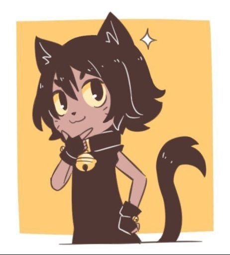

about me
hai! i'm vio, a hacker and cool cat :D
i'm a former blackhat hacker; founder of SiegedSec, aka the "gay furry hackers," and a former member of GhostSec and Anonymous Sudan.
nowadays, i stick to legal hacking. i'm a member of the nonprofit reverse engineering organisation ud2, and i regularly submit vulnerability reports to various companies.
on this blog i'll be writing about my work in hacking, my past in cybercrime, and any other cool technical things i like :3
if you wish to get in contact, heres my contact info!
email: cybercrimecat@riseup.net
signal: @cybercrimecat.69
twitter: cybercrimekitty